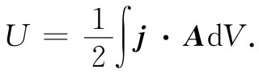
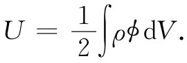

现在我们可以应用关于U总 =-U机械 这一点知识来求出恒定电流在磁场中的真实能量。可以从一个小电流回路的真实能量出发，简单地称U总 为U，便可写成
U=μ·B. （15.16）
尽管这个能量是对平面矩形回路算出来的，但这同样的结果对于任何形状的小平面回路均适用。
一个任意形状的电路可以设想为由许多小的电流回路构成，从而可以求出该电路的能量。比方说，有一条如图15-4所示的回路Γ那种形状的导线。我们用一个S面来填满该曲线，并在该面上划出大量的小回路，其中每一个都可以认为是平面。如果让电流I沿每一 小回路环行，净结果将犹如电流环绕Γ一样，因为在Γ内的那些电流将在所有线段上都互相抵消。物理上，这个小电流系统与原来的电路是不能区别的。能量也必然会相同，即刚好是那些小回路的能量之和。
图15-4 一个大回路在磁场中的能量可以认为等于许多个小回路的能量之和
设每一小回路的面积为Δa，则它的能量为IΔaBn ，其中Bn 为垂直于Δa的分量。总能量为
U=∑IBn Δa.
当各回路趋于无限小的极限时，求和变成积分，即
U=I∫Bn da=I∫B·nda， （15.17）
式中n是垂直于da的单位矢量。
如果令B=▽×A，则可利用斯托克斯定理把一个面积分与一个线积分联系起来：
I∫S （▽×A）·nda=I∮Γ A·ds， （15.18）
式中ds是沿Γ的线元。因此我们就有了对于任意形状的电路的能量：
U=I∮电路 A·ds. （15.19）
在这个表式中，A当然是指产生了导线所在处之B场的那些电流（而不是该导线中的电流I）所造成的矢势。
现在，恒定电流的任何分布都可以设想成由平行于电流线的一些细线电流所构成。对于这样的细线电路中的每一对，能量由式（15.19）给出，式中的积分是环绕其中一个电路取的，同时应用那来自另一个电路的矢势A。为求得总能量，我们需要对所有各对求和。如果不保持一对一对求和，而是把全部电流线都相加起来，则会计算能量两次（以前在静电学中也曾见过类似的结果），因而总能量可写成
 （15.20）
这一公式相当于我们以前对静电能所求得的结果：
 （15.21）
因此，如果我们愿意，便可在静磁学中将A看成是关于电流的一种势能。可惜，这一概念不大有用，因为它只适用于静场。实际上，当场随时间变化时，则式（15.20）和（15.21）均不会给出正确的能量。